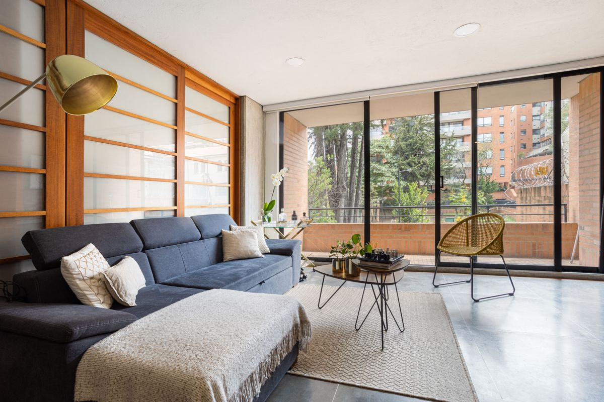
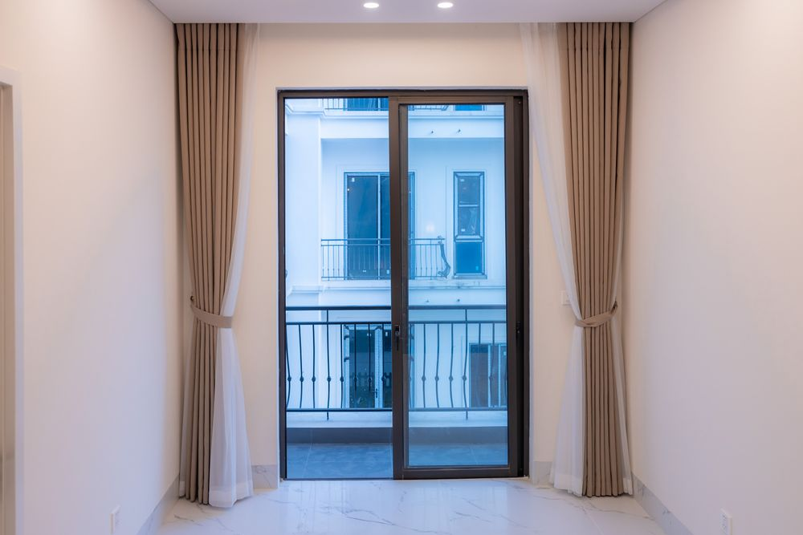
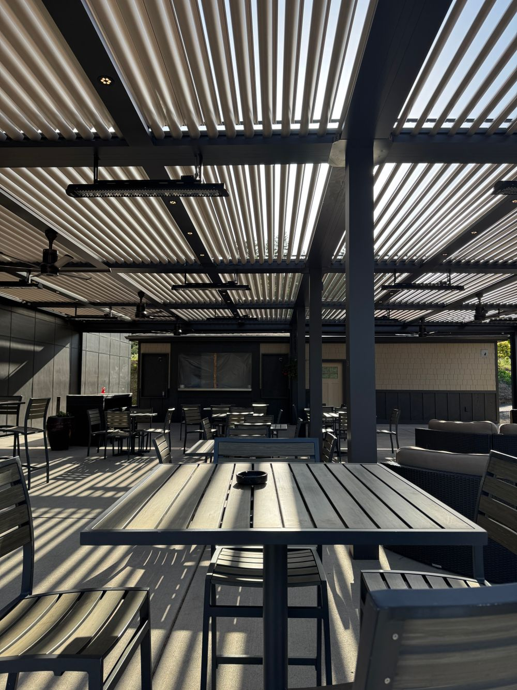
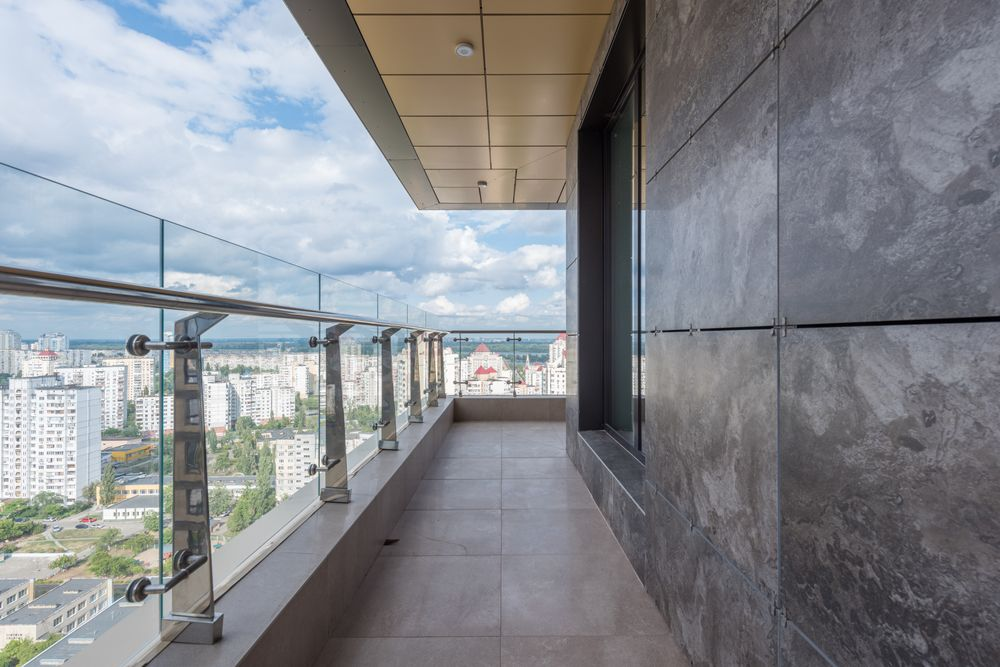
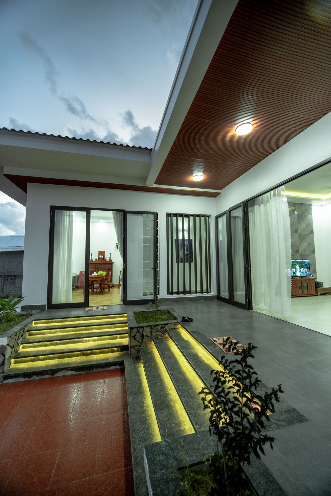
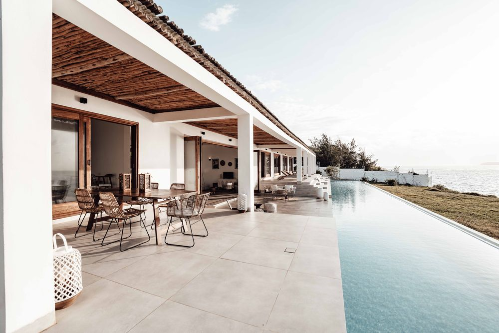
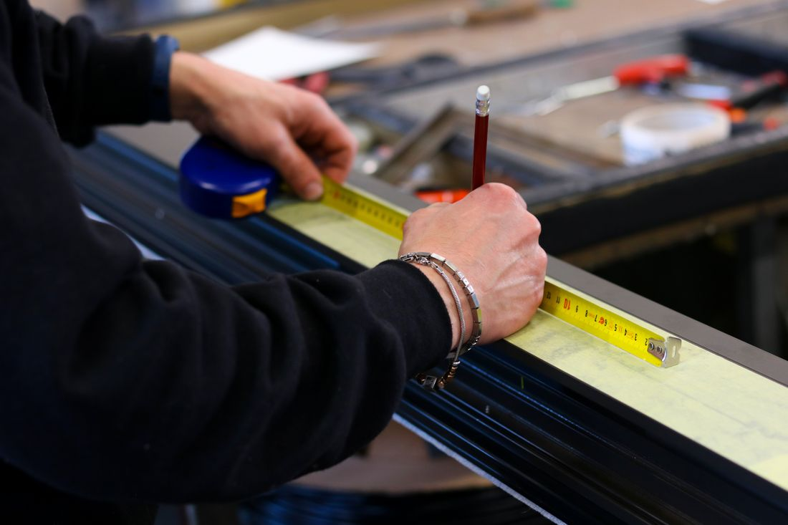

Rémy Sarfati conçoit, fabrique et pose vos fenêtres, baies coulissantes,
pergolas et garde-corps en aluminium. Du relevé de cotes à la finition,
un travail net, pensé pour durer sous le soleil méditerranéen.
Une seule matière, des usages très différents. Voici ce que Rémy fabrique
et installe chez les particuliers comme chez les pros de la Côte d'Azur.

Fenêtres & baies coulissantes
Fenêtres, châssis fixes et baies coulissantes ou à galandage.
Profilés fins à rupture de pont thermique, grandes surfaces
vitrées, ouvertures qui laissent entrer la lumière sans laisser
passer le froid.
Double vitrage isolant
Baie à galandage
Volets roulants intégrés
Pergolas bioclimatiques
Pergolas à lames orientables pour gérer le soleil et la pluie sur la
terrasse, et pergolas adossées en aluminium laqué.
Portes & portails
Portes d'entrée, portails battants ou coulissants et portillons assortis,
motorisés si besoin. Sécurité et ligne soignée à l'entrée.
Garde-corps & clôtures
Garde-corps de terrasse, balcon et escalier, clôtures et brise-vues en
aluminium. Remplissage barreaudé, tôle ou verre.
Vérandas & extensions
Vérandas et extensions vitrées pour gagner une pièce de vie lumineuse,
ossature aluminium étudiée pour le climat de la région.
Et aussi
Volets roulants et battants, stores et brise-soleil orientables (BSO),
moustiquaires, habillages aluminium.
Quelques types de chantiers réalisés en aluminium. Cliquez pour agrandir.
Photos d'illustration, à remplacer par les chantiers de Rémy.

Baie vitrée Villa, Antibes

Pergola bioclimatique Terrasse, Juan-les-Pins

Garde-corps verre Terrasse, Cap d'Antibes

Baies coulissantes anthracite Villa, Vallauris

Véranda & extension Maison, Biot

Un seul interlocuteur, du premier rendez-vous à la pose
Avec Alumi'Home, c'est Rémy qui prend les mesures, qui vous conseille sur
les profilés et les teintes, et qui revient poser. Pas d'intermédiaire,
pas de sous-traitance qui se renvoie la balle si une finition coince.
L'aluminium est une matière exigeante : bien posée, elle ne bouge pas,
ne rouille pas et garde sa teinte des années sous le soleil et l'air marin.
Mal posée, elle laisse passer l'eau et l'air. La différence se joue sur la
préparation et le soin du détail. C'est exactement là que Rémy se concentre.
Conseil honnête
On part de votre usage et de votre budget, pas du produit le plus cher.
Sur-mesure intégral
Dimensions, ouvertures, teinte RAL et finitions choisies avec vous.
Pose soignée
Calage, étanchéité et joints repris proprement, chantier laissé net.
D'Antibes à toute la Côte d'Azur ouest
Basé à Antibes, Rémy se déplace sur tout le bassin cannois et le pays
d'Antibes pour le relevé de cotes comme pour la pose. Votre commune n'est
pas dans la liste ? Demandez quand même, c'est souvent à dix minutes.
Une autre question ? Écrivez-la directement sur WhatsApp, réponse rapide.
Le devis est-il vraiment gratuit ?
Oui. Le déplacement pour le relevé de cotes et le chiffrage sont gratuits et sans engagement, sur Antibes et les communes voisines.
Vous travaillez l'aluminium uniquement ?
L'aluminium est la spécialité de la maison : il est fin, robuste et parfait pour le climat marin. Pour certains projets mixtes, parlons-en lors du rendez-vous.
Vous posez, ou seulement la fourniture ?
Les deux. Rémy fournit ET pose. Vous avez un seul interlocuteur du relevé de mesures jusqu'à la finition des joints.
Particuliers et professionnels ?
Oui, les deux. Rénovation d'appartement, villa, commerce ou collaboration avec un architecte ou un constructeur.
Quelles couleurs sont possibles ?
Toute la gamme RAL, en finition mate, satinée ou texturée. L'anthracite (RAL 7016) reste le grand classique, mais tout est possible selon votre façade.
Sous quel délai ?
Le devis arrive en général sous 48 h après le relevé. Les délais de fabrication dépendent du projet : ils sont annoncés clairement et tenus.
Demandez votre devis gratuit
Décrivez votre projet en deux lignes. À l'envoi, le formulaire ouvre
WhatsApp avec votre message déjà rédigé : vous n'avez plus qu'à appuyer
sur « envoyer ». Vous préférez parler de vive voix ? Appelez Rémy.